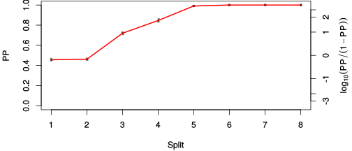

| chain # | burnin | subsample | Iterations (remaining) | command line | subdirectory | directory |
|---|---|---|---|---|---|---|
| 1 | 10000 | 1 | 90000 | /usr/local/bali-phy-3.0-beta2/bin/bali-phy cat_E6_E7_AA_red3_v2_all4Manatees_BetaGamma.fas -s 73248 -n cat_E6_E7_red3_v2_all4Manatees_BetaGamma_c1 | cat_E6_E7_red3_v2_all4Manatees_BetaGamma_c1-1 | /home/willemse/data/trees/BaliPhy/cat_E6_E7/red3_v2 |
| 2 | 10000 | 1 | 90000 | /usr/local/bali-phy-3.0-beta2/bin/bali-phy cat_E6_E7_AA_red3_v2_all4Manatees_BetaGamma.fas -s 10271 -n cat_E6_E7_red3_v2_all4Manatees_BetaGamma_c2 | cat_E6_E7_red3_v2_all4Manatees_BetaGamma_c2-1 | /home/willemse/data/trees/BaliPhy/cat_E6_E7/red3_v2 |
| 3 | 10000 | 1 | 90000 | /usr/local/bali-phy-3.0-beta2/bin/bali-phy cat_E6_E7_AA_red3_v2_all4Manatees_BetaGamma.fas -s 37293 -n cat_E6_E7_red3_v2_all4Manatees_BetaGamma_c3 | cat_E6_E7_red3_v2_all4Manatees_BetaGamma_c3-1 | /home/willemse/data/trees/BaliPhy/cat_E6_E7/red3_v2 |
| P(data|M) = -5771.934 +- 0.183 | Complete sample: 125 topologies | 95% Bayesian credible interval: 20 topologies |
Phylogeny Distribution

| Partition support: Summary |
| Partition support graph: SVG |
{kind=link}
| 50% consensus | Newick (+PP) | SVG | |||||
| 66% consensus | Newick (+PP) | SVG | |||||
| 80% consensus | Newick (+PP) | SVG | |||||
| 90% consensus | Newick (+PP) | SVG | |||||
| 95% consensus | Newick (+PP) | SVG | |||||
| 99% consensus | Newick (+PP) | SVG | |||||
| 100% consensus | Newick (+PP) | SVG | |||||
| MAP | Newick (+PP) | SVG | |||||
| greedy | Newick (+PP) | SVG |
{kind=link}
{kind=link}
{kind=link}
{kind=link}
{kind=link}
{kind=link}
{kind=link}
{kind=link}
Alignment Distribution
Partition 1
| Diff | Min. %identity | # Sites | Constant | Informative | ||||
|---|---|---|---|---|---|---|---|---|
| Initial | FASTA | HTML | Diff | 3.19% | 313 | 1 (0.319%) | 209 (66.8%) | |
| Best (WPD) | FASTA | HTML | AU | 16.3% | 453 | 23 (5.08%) | 161 (35.5%) |
Mixing
{kind=link}
{kind=link}
| burnin (scalar) | ESS (scalar) | ESS (partition) | ASDSF | MSDSF | PSRF-CI80% | PSRF-RCF |
|---|---|---|---|---|---|---|
| 993 | 2372 | 2271.115 | 0.005 | 0.013 | 1.001 | 1.005 |
Projection of RF distances for the first 3 chains3D | Variation of split PPs across chains |
Scalar variables
| Statistic | Median | 95% BCI | ACT | ESS | burnin | PSRF-CI80% | PSRF-RCF |
|---|---|---|---|---|---|---|---|
| prior | -351.9 | (-392.2, -316.9) | 49.11 | 5498 | 891 | 1 | 0.9964 |
| prior_A1 | -345.2 | (-383.2, -312) | 18.94 | 14255 | 427 | 1 | 0.9978 |
| likelihood | -5752 | (-5773, -5731) | 15.97 | 16901 | 275 | 0.9997 | 1 |
| logp | -6104 | (-6138, -6074) | 67.21 | 4017 | 993 | 1 | 0.9962 |
| Heat.beta | 1 | ||||||
| Scale1 | 5.706 | (3.112, 9.312) | 1.01 | 267304 | 113 | 1 | 1.001 |
| S1.F.pi.A | 0.06422 | (0.05279, 0.07636) | 7.997 | 33763 | 371 | 1 | 1 |
| S1.F.pi.R | 0.06875 | (0.05611, 0.08228) | 8.011 | 33704 | 288 | 1 | 0.9974 |
| S1.F.pi.N | 0.02929 | (0.02197, 0.03742) | 8.187 | 32979 | 135 | 1 | 1.001 |
| S1.F.pi.D | 0.04297 | (0.03298, 0.0537) | 8.336 | 32391 | 165 | 1 | 1.005 |
| S1.F.pi.C | 0.05785 | (0.0447, 0.07224) | 8.194 | 32949 | 414 | 1.001 | 1 |
| S1.F.pi.Q | 0.04015 | (0.0319, 0.04888) | 7.827 | 34494 | 576 | 0.9999 | 0.9976 |
| S1.F.pi.E | 0.06282 | (0.05118, 0.07502) | 8.882 | 30400 | 745 | 1 | 0.9984 |
| S1.F.pi.G | 0.07553 | (0.06034, 0.0918) | 8.066 | 33474 | 255 | 0.999 | 0.9956 |
| S1.F.pi.H | 0.02772 | (0.02002, 0.03616) | 7.836 | 34454 | 425 | 0.9999 | 0.9964 |
| S1.F.pi.I | 0.04726 | (0.03757, 0.0575) | 8.643 | 31240 | 180 | 0.9998 | 1.001 |
| S1.F.pi.L | 0.1191 | (0.1017, 0.1373) | 8.129 | 33214 | 505 | 0.9996 | 1.002 |
| S1.F.pi.K | 0.03287 | (0.02509, 0.04112) | 8.706 | 31012 | 336 | 1.001 | 1.001 |
| S1.F.pi.M | 0.008754 | (0.005139, 0.01313) | 7.821 | 34521 | 205 | 1.001 | 0.9923 |
| S1.F.pi.F | 0.05114 | (0.03971, 0.06285) | 8.067 | 33471 | 434 | 0.9996 | 0.9947 |
| S1.F.pi.P | 0.03577 | (0.02595, 0.04654) | 8.23 | 32807 | 452 | 0.9995 | 1.001 |
| S1.F.pi.S | 0.05181 | (0.04186, 0.0622) | 8.747 | 30869 | 428 | 0.9997 | 1.005 |
| S1.F.pi.T | 0.05474 | (0.04413, 0.06632) | 7.83 | 34483 | 131 | 1 | 1 |
| S1.F.pi.W | 0.0168 | (0.01012, 0.02433) | 7.921 | 34085 | 204 | 1 | 0.9968 |
| S1.F.pi.Y | 0.04735 | (0.03656, 0.05901) | 7.886 | 34239 | 207 | 1 | 1.002 |
| S1.F.pi.V | 0.06129 | (0.05011, 0.07325) | 8.448 | 31959 | 291 | 0.9998 | 0.9984 |
| I1.RS07.meanIndelLengthMinus1 | 5.264 | (3.537, 7.405) | 5.337 | 50591 | 192 | 1 | 1 |
| I1.RS07.logLambda | -4.409 | (-4.784, -4.058) | 4.154 | 65003 | 181 | 1 | 1.001 |
| |A1| | 437 | (424, 454) | 113.8 | 2372 | 400 | 0.9677 | 1.003 |
| #indels1 | 39 | (34, 44) | 22.55 | 11974 | 240 | 0.8571 | 0.9979 |
| |indels1| | 242 | (223, 267) | 24.33 | 11099 | 285 | 0.9667 | 1.001 |
| #substs1 | 1047 | (1030, 1059) | 95.22 | 2835 | 142 | 0.9661 | 0.9994 |
| Scale1*|T| | 7.162 | (6.664, 7.685) | 2.572 | 104988 | 159 | 1 | 0.997 |
| |A| | 437 | (424, 454) | 113.8 | 2372 | 400 | 0.9677 | 1.003 |
| #indels | 39 | (34, 44) | 22.55 | 11974 | 240 | 0.8571 | 0.9979 |
| |indels| | 242 | (223, 267) | 24.33 | 11099 | 285 | 0.9667 | 1.001 |
| #substs | 1047 | (1030, 1059) | 95.22 | 2835 | 142 | 0.9661 | 0.9994 |
| |T| | 1.255 | (0.6698, 1.993) | 1.004 | 268991 | 134 | 1 | 1.002 |